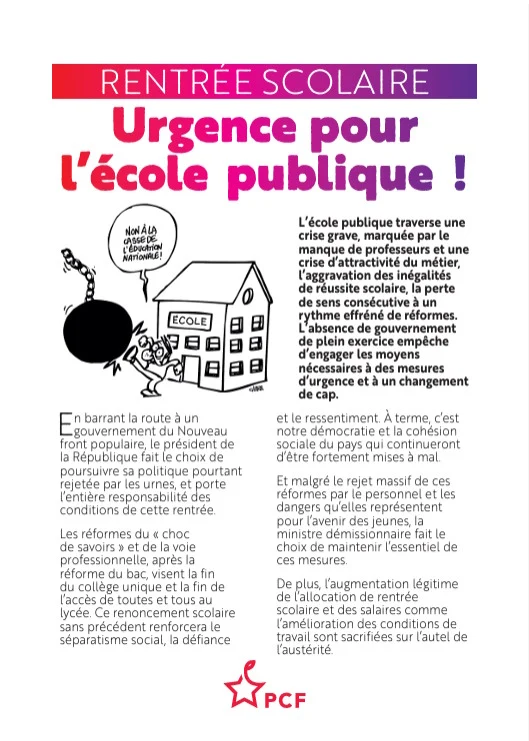
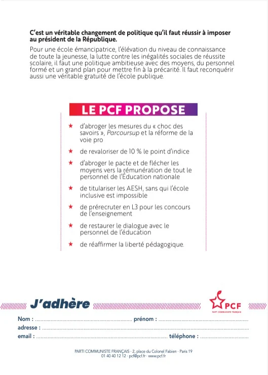

Prise de position relayée
Rentrée scolaire 2024. « Urgence pour l’école publique ! »
Date indiquée par Facebook · 1 septembre 2024
Repères éditoriaux
Nous avons partagé le tract de rentrée du PCF. Ses deux pages présentent les difficultés de l’école publique et les propositions des communistes.
Texte conservé avec la publication
RENTRÉE SCOLAIRE
Urgence pour l'école publique !


Sources
Archive rouge · export Facebook · AR-0002-FB-01303
À lire aussi · « Argent public pour les collèges publics ! » Notre communiqué de rentrée